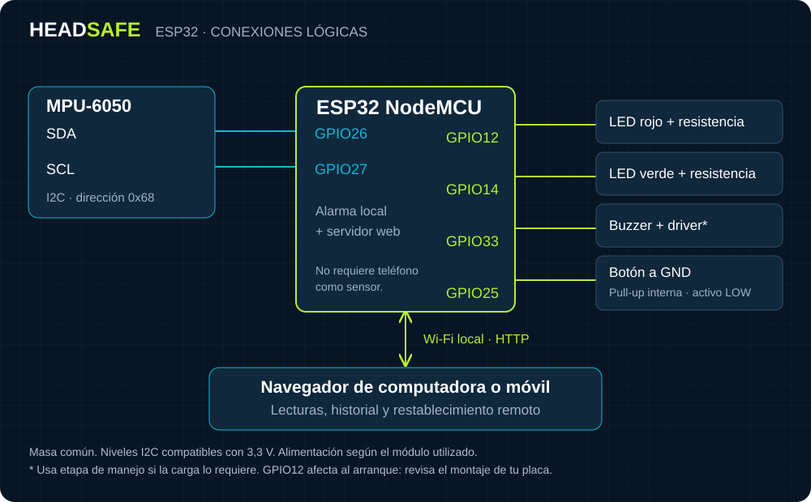

ESP32 + MPU-6050 · WI-FI LOCAL
Conecta la placa.
Abre el panel.
La ESP32 lee el sensor, controla la alarma y aloja esta web. El móvil o la computadora solo necesitan un navegador; no se utilizan sus sensores.
01 · PUESTA EN MARCHA
En cuatro pasos
- Carga el firmware. Abre
firmware/HeadSafe/HeadSafe.inoen Arduino IDE. Usa el paquete esp32 de Espressif Systems 3.3.2, placa ESP32 Dev Module, selecciona el puerto USB correcto y pulsa Subir. Los archivos de la web ya están incluidos. - Abre el monitor serie a 115200. Al arrancar se muestran el nombre de red
HeadSafe-…y su contraseña individual. Conserva la contraseña en privado. - Conéctate a esa red Wi-Fi. Hazlo desde el móvil o la computadora. Si aparece «sin Internet», mantén la conexión; Internet no hace falta para usar el panel.
- Abre
http://192.168.4.1. El panel debe mostrar el identificador del dispositivo y el estado del sensor. No necesitas ejecutar el simulador ni dejar un PC encendido.
Firmware preparado para ESP32 clásico. No utilizar este pinout o el binario en ESP32-C3, S2 o S3 sin adaptarlo.
02 · MONTAJE
Conexiones del módulo
| Componente | ESP32 |
|---|---|
| MPU-6050 · SDA | GPIO26 |
| MPU-6050 · SCL | GPIO27 |
| LED rojo con resistencia | GPIO12 |
| LED verde con resistencia | GPIO14 |
| Buzzer · señal de control | GPIO33 |
| Pulsador entre pin y GND | GPIO25 |
Antes de alimentar
Comparte GND entre los componentes. Verifica la alimentación del módulo y que los niveles I2C sean compatibles con 3,3 V. El sensor utiliza la dirección 0x68.
No conectes una sirena de potencia directamente al GPIO: utiliza una etapa de manejo adecuada si su consumo lo requiere. El buzzer debe poder reproducir tonos de 600 y 900 Hz.
GPIO12 afecta al arranque. El circuito del LED no debe forzarlo al nivel incorrecto al encender; revisa las especificaciones de tu placa.

03 · USO
Qué ocurre ante un impacto
El firmware compara |ax| + |ay| > 65000 en cuentas crudas. Si se supera, queda enclavada la alarma: LED rojo y buzzer alternando 900/600 Hz. Bajar el movimiento o cerrar la web no cancela esa alarma.
Para reconocerla, utiliza el pulsador físico o Restablecer alarma en el panel. El reinicio remoto solo se confirma cuando la ESP32 responde. Reconocer una alarma no confirma que sea seguro continuar una actividad.
- Sin conexión: el estado actual es desconocido; no se presenta como seguro.
- Error del sensor: revisa I2C y alimentación. Las lecturas anteriores no son válidas y la alarma previa no se borra.
- Historial: la placa retiene los últimos 32 eventos en RAM. El archivo local del navegador, si está disponible, es independiente; exporta CSV para conservar tus registros.
- Alcance: no hay contactos, GPS, batería estimada, perfiles ni sensores del teléfono. El sonido de alarma corresponde al buzzer de la ESP32.
El umbral 65000 está cerca del máximo aritmético 65536; un movimiento normal puede no activarlo. Se conserva la calibración solicitada, no es una medida de fuerza en newtons ni un criterio de lesión validado. La gravedad puede afectar X e Y cuando se inclina el sensor. No pruebes el sistema golpeando personas.
04 · SI ALGO NO RESPONDE
Comprobaciones rápidas
No aparece ningún puerto USB
Prueba un cable de datos, no solo de carga. Revisa el controlador correspondiente al conversor USB de tu placa y vuelve a seleccionar el puerto en Arduino IDE.
La placa no arranca o no permite cargar
Revisa alimentación y el circuito del GPIO12. En algunas placas hay que mantener BOOT durante el inicio de la carga. No cambies fusibles ni desactives protecciones como solución.
Estoy conectado a HeadSafe, pero no carga la página
Escribe http://192.168.4.1 con HTTP. Mantén la conexión Wi-Fi aunque no tenga Internet. Si usas una VPN o datos móviles, comprueba que no estén redirigiendo el tráfico local. Mira la URL que muestra el monitor serie.
El panel muestra «Modo demostración»
Estás usando el simulador del PC, no una placa. Conéctate a la Wi-Fi de la ESP32 y abre su propia dirección. El firmware real no incluye botones de simulación.
Ya utilicé muchos reinicios remotos
Se admiten 128 identificadores de reinicio remoto por arranque. Al agotarse, el botón físico sigue disponible. Esto evita que un comando antiguo borre un impacto posterior. Reiniciar eléctricamente la placa también borra el historial en RAM y la alarma retenida; no lo uses para ocultar una alarma sin revisarla.
Quiero usar la Wi-Fi de mi router
En firmware/HeadSafe/config.h, establece WIFI_SSID y WIFI_PASSWORD, vuelve a cargar y consulta la IP en el monitor serie. No publiques ese archivo con tus credenciales. Si no conecta, el firmware ofrece su red de respaldo.